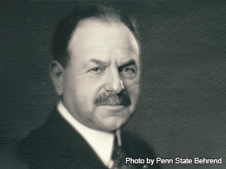
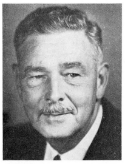
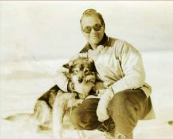

Guide to People, Places, and Things Mentioned in this Letter
List of Important People, Places, and Things mentioned in Paul Siple's Letter to Mr.
Behrend
Ernst Behrend
President of the Hammermill Paper Company. Lent a sextant to Paul Siple for use in
his Antarctic expedition.
Ernst Behrend
Paul Siple
Leader/Biologist
American Antarctic explorer. Participated in all 5 expeditions conducted by Admiral
Byrd.
Paul Siple in 1932
Richard Byrd
Admiral
American naval officer and Antarctic explorer. Admiral Byrd conducted 5 Antarctic
expeditions between 1928 and 1956.
Admiral Richard E Byrd
Alton Wade
Geologist
Franklin Alton Wade was an American geologist who accompanied Admiral Richard Byrd
on two Antarctic expeditions.
Franklin Alton Wade
Olin Stancliff
Driver/Assistant
Part of Admiral Byrd's Antarctic sledging party. Olin Stancliff primarily served as
a dog driver. Little other information is available. No photo could be found.
Stevenson Corey
Driver/Assistant
A supply officer on Admiral Byrd's Antarctic expedition team. He also served as a
dog driver along with Olin Stancliff.
Stevenson Corey in 1933
Marie Byrd Land
Unclaimed region of Antarctica. Named after the wife of Admiral Richard E. Byrd.
Coordinates: Between 158°00'W and 103°24'W
Little America
A series of bases established in Antarctica by Admiral Byrd.
Coordinates: 78°12′S 162°12′W
Mt. Raymond Fosdick
A mountain located in the Fosdick Mountain Range in Marie Byrd Land.
Coordinates: 76°32′S 144°45′W
Edsel Ford Mountain Range
The mountain range containing Mt. Raymond Fosdick
Sextant
An instrument used in celestial navigation used to measure the distance between two
visible objects.